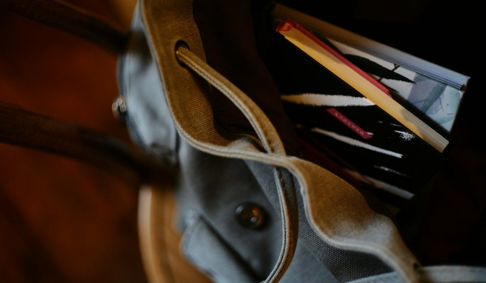
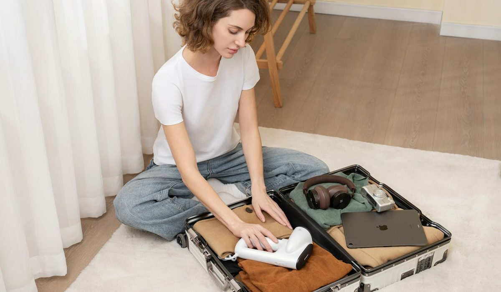

En bref
Pour la plupart des femmes, la bonne taille de cabas est le format M, autour de 34 x 28 x 14 cm, noté 8,6/10 dans notre grille. Il accueille un A4, un ordinateur 13 pouces et une gourde de 50 cl sans tirer sur l'épaule. Le format L (8,1/10) devient nécessaire dès qu'on porte un 14 pouces ou des affaires d'enfant, le format S (7,3/10) suffit pour une journée sans ordinateur.
- Un ordinateur 14 pouces demande une largeur intérieure d'au moins 32 cm, un 13 pouces se contente de 31 cm
- Un cabas M en cuir pèse 760 à 820 g à vide, le même format en toile de coton 290 à 340 g
- Au-delà de 4,5 kg de contenu, une anse simple de 2 cm de large commence à marquer l'épaule en moins d'une heure
- Le cabas cabine de 40 x 30 x 20 cm correspond à l'objet personnel accepté gratuitement par plusieurs compagnies européennes
Sommaire de ce guide
Nos critères et leur poids
Une taille de cabas ne se juge pas dans l'absolu. Elle se juge sur une semaine ordinaire, avec un trajet en métro, un déjeuner dehors, un passage à la boulangerie. Nous avons donc noté chaque format sur quatre critères, pondérés selon ce qui fait regretter un achat.
| Critère | Poids | Ce que nous regardons |
|---|---|---|
| Polyvalence | 35 % | Le nombre de situations de la semaine que le format couvre sans changer de sac |
| Confort chargé | 25 % | La tenue de l'anse et de l'épaule avec 3 kg de contenu pendant 45 minutes |
| Capacité utile | 20 % | Ce qui rentre réellement, ouverture et soufflets compris, et non le volume théorique |
| Poids à vide | 20 % | Le poids du sac seul, en toile et en cuir, rapporté à sa contenance |
Total 100 %. Chaque format est testé avec le même contenu de référence, du téléphone seul jusqu'à l'ordinateur 15 pouces.
La polyvalence pèse le plus lourd. Un cabas parfait pour la plage et ridicule au bureau sert dix jours par an. Un format qui passe de la réunion au marché du samedi sert trois cents jours.
Le tableau des tailles de cabas
Les fabricants n'emploient pas tous la même échelle. Un « grand » cabas chez une maison peut correspondre au M d'une autre, et certaines gammes, comme la ligne Le Pliage de Longchamp, se déclinent en cinq ou six formats sous des noms qui ne disent rien des centimètres. Nous avons donc ramené 46 cabas premium à une échelle commune, en mesurant l'extérieur à plat.
| Taille | Note /10 | Dimensions typiques | Ce qui rentre | Poids à vide (toile / cuir) | Usage |
|---|---|---|---|---|---|
| XS | 6,4 | 22 x 18 x 10 cm | Téléphone, portefeuille, clés, petite trousse | 180 g / 430 g | Soirée, week-end en ville |
| S | 7,3 | 28 x 22 x 12 cm | Format A5, liseuse, tablette 11 pouces, gourde 35 cl | 230 g / 570 g | Journée sans ordinateur |
| MNotre choix | 8,6 | 34 x 28 x 14 cm | A4, ordinateur 13 pouces, gourde 50 cl | 310 g / 790 g | Bureau, ville, quotidien |
| L | 8,1 | 40 x 32 x 15 cm | Ordinateur 14 pouces, dossier A4, gourde 75 cl, gilet | 380 g / 980 g | Travail chargé, maman |
| XL | 6,9 | 46 x 36 x 18 cm | Ordinateur 15 pouces, tenue de sport, serviette | 460 g / 1 240 g | Sport, plage, courses |
| Cabine | 7,2 | 40 x 30 x 20 cm | Ordinateur 14 pouces, trousse de toilette, une tenue | 520 g / 1 310 g | Avion, objet personnel |
| Week-end | 6,6 | 50 x 35 x 22 cm | Deux nuits de vêtements, chaussures plates, ordinateur | 640 g / 1 580 g | Train, voiture, deux jours |
Dimensions extérieures moyennes relevées sur 46 cabas du marché premium, largeur x hauteur x profondeur, poids à vide hors pochette amovible. Notes et prix, relevé de démonstration du 9 octobre 2026.
Retenez un chiffre avant tout autre. La largeur intérieure. Elle fait 2 à 3 cm de moins que la largeur extérieure annoncée sur un cabas en cuir doublé, à cause des coutures retournées et de l'épaisseur de la doublure. Un cabas vendu à 33 cm de large ne prend donc pas toujours un ordinateur de 31,3 cm.

Ce qui rentre vraiment dans chaque format
Les fiches produit donnent un volume en litres. Personne ne range des litres. On range un ordinateur, une gourde, un pull roulé et une trousse qui ne se plie pas. Voici les trois objets qui décident de la taille.
L'ordinateur portable
Un 13 pouces mesure autour de 30,4 x 21,5 cm, un 14 pouces 31,3 x 22,1 cm, un 15 pouces 34 x 23,8 cm. Le premier entre dans un M bien coupé. Le deuxième demande un L ou un M dont la fiche annonce au moins 35 cm de large extérieur. Le troisième impose un XL ou un cabas pensé pour le travail, avec poche matelassée.
Le format A4
Une chemise A4 fait 21 x 29,7 cm, soit 32 cm avec son élastique et ses rabats. Elle tient debout dans un M, de biais dans un S, et pas du tout dans un XS. Les cabas à fond plat de 14 cm la gardent droite, ceux à fond pincé la courbent en fin de journée.
La gourde
Une gourde de 50 cl mesure 22 à 24 cm de haut, une 75 cl environ 27 cm. Dans un cabas de 28 cm de haut, la 75 cl dépasse de l'ouverture. Elle tient, mais elle accroche la doublure à chaque passage de la main.
Reste la profondeur, que les fiches oublient souvent. Un cabas de 10 cm de soufflet accueille un ordinateur et une trousse plate. Pour ajouter un pull roulé ou une boîte à déjeuner, il faut 14 cm au moins. Un fond trop étroit oblige à empiler, et l'on cherche ses clés sous trois couches à chaque arrêt.
Je pensais qu'un grand cabas me simplifierait la vie. En réalité je le remplissais jusqu'au bord et je finissais la journée avec quatre kilos sur une épaule. Le format moyen m'a obligée à trier, et c'est très bien ainsi. Une lectrice, 38 ans, Nantes.
Le poids à vide, critère que tout le monde oublie
Un cabas en cuir pleine fleur de format L pèse près d'un kilo avant d'y mettre quoi que ce soit. Ajoutez un ordinateur de 1,3 kg, une gourde pleine et un chargeur, et l'épaule porte 3,5 kg dès 8 heures du matin.
La toile de coton enduite et le nylon divisent ce poids par deux ou trois. C'est la raison du succès durable des cabas pliables en nylon, qui pèsent souvent moins de 250 g en format L. Le cuir reste plus élégant et vieillit mieux, mais il se choisit un format en dessous de ce qu'on prendrait en toile.
- Un cuir lisse de 1,2 mm d'épaisseur ajoute environ 180 g par rapport à un cuir souple de 0,9 mm sur un même format M.
- Une doublure en suédine ou en cuir alourdit le sac de 60 à 90 g par rapport à une doublure en coton.
- Les fonds cloutés et les pieds métalliques ajoutent 30 à 50 g mais protègent le cuir du sol mouillé.
- Une pochette intérieure amovible pèse rarement plus de 70 g et vaut largement son poids pour retrouver ses clés.
Les anses comptent autant que le poids. Une anse plate de 2 cm répartit mal 3 kg, une anse de 3 cm ou une anse roulée se fait oublier. Vérifiez aussi la hauteur de chute, au moins 24 cm pour porter le sac à l'épaule par-dessus un manteau d'hiver. Notre seuil pratique tient en une ligne. Pour un usage quotidien à pied ou en transport, un cabas en cuir ne devrait pas dépasser 850 g à vide.
Comment choisir sa taille selon son profil
La bonne taille dépend moins de votre silhouette que de ce que vous transportez le mardi, jour moyen de la semaine. Une femme de 1,58 m peut porter un L sans qu'il paraisse énorme si les anses sont assez longues pour le placer sous le bras. Voici nos recommandations par profil.
La citadine
Elle sort sans ordinateur, déjeune dehors et rentre à pied. Un S ou un petit M suffit, avec une fermeture zippée ou aimantée pour le métro. Visez 28 à 32 cm de large et moins de 600 g en cuir. Les petits cabas de Polène ou de Sézane illustrent bien ce format, assez grand pour un carnet, assez compact pour le soir.
La maman
Couches, gourde, goûter, change, doudou de secours. Le L s'impose, idéalement en toile enduite lavable à l'éponge, avec deux poches intérieures et une anse renforcée de 3 cm de large au minimum. Un XL paraît tentant, mais il se remplit et finit à 6 kg.
Le travail
Tout part de l'ordinateur. Mesurez-le, ajoutez 2 cm, et cherchez cette largeur à l'intérieur du sac. Un 13 pouces va dans un M, un 14 pouces dans un L. Un fond plat de 14 à 15 cm garde les dossiers droits. Préférez une fermeture, même une simple languette aimantée, pour la pluie et les transports.

Le voyage
Deux cas distincts. Pour l'avion, le cabas cabine autour de 40 x 30 x 20 cm passe sous le siège et accepte un 14 pouces, une trousse de toilette et une tenue de rechange. Pour un week-end en train ou en voiture, le grand format de 50 x 35 x 22 cm remplace un petit sac de voyage. Les lignes pliables en nylon, chez Longchamp par exemple, existent dans ce grand format et restent bien plus légères qu'un modèle en cuir.
Notre verdict
Le format M, autour de 34 x 28 x 14 cm, couvre la plus grande partie de la semaine d'une femme active. Il prend un A4, un ordinateur 13 pouces et une gourde de 50 cl, et reste sous 800 g en cuir. C'est celui que nous conseillons quand on n'achète qu'un cabas.
Si votre priorité est l'ordinateur 14 pouces ou les affaires d'enfant, prenez un L de 40 cm de large, en toile si vous marchez beaucoup. Si vous voyagez souvent en avion, prenez un cabas cabine de 40 x 30 x 20 cm. Si vous ne sortez jamais avec un ordinateur, un S suffit, et votre épaule vous remerciera.
Questions fréquentes
Quelle taille de cabas faut-il pour un ordinateur 14 pouces ?
Un ordinateur 14 pouces mesure environ 31,3 x 22,1 cm. Il faut un cabas d'au moins 32 cm de largeur intérieure, soit 35 cm environ en largeur extérieure annoncée. Le format L, autour de 40 x 32 cm, le prend sans forcer, avec une poche matelassée de préférence.
Est-ce qu'un cabas M peut contenir une feuille A4 ?
Oui, un cabas M de 34 x 28 cm contient une feuille ou une chemise A4 de 21 x 29,7 cm posée debout. Il faut que le fond soit plat et fasse au moins 12 cm de profondeur pour que la chemise reste droite. Dans un S de 28 cm de large, l'A4 ne rentre que de biais.
Combien pèse un cabas en cuir à vide ?
Un cabas en cuir pèse de 430 g en format XS à environ 1,6 kg en format week-end. Le format M, le plus courant, pèse 760 à 820 g selon l'épaisseur du cuir et la doublure. En toile de coton, le même format descend autour de 310 g.
Quelle est la différence entre un cabas L et un cabas XL ?
Le cabas L mesure en moyenne 40 x 32 x 15 cm et prend un ordinateur 14 pouces avec un dossier. Le cabas XL monte à 46 x 36 x 18 cm et accepte un 15 pouces ou une tenue de sport complète. En cuir, le XL pèse environ 260 g supplémentaires et sert surtout à la plage, au sport ou aux courses.
Est-ce qu'un cabas peut servir de bagage cabine en avion ?
Oui, si ses dimensions restent autour de 40 x 30 x 20 cm, le format de l'objet personnel accepté gratuitement par plusieurs compagnies européennes. Il doit passer sous le siège avant, donc un cabas souple se loge mieux qu'un modèle rigide. Vérifiez toujours la grille de la compagnie avant le départ.
Comment sont notées les tailles de cabas ?
Chaque taille est notée sur quatre critères, la polyvalence (35 %), le confort chargé (25 %), la capacité utile (20 %) et le poids à vide (20 %). Les dimensions sont des moyennes mesurées sur 46 cabas premium. Les notes et les poids indiqués viennent d'un relevé de démonstration du 9 octobre 2026.
Notre méthode
Ce classement repose sur des relevés faits sur les sites officiels et en boutique, refaits chaque mois.
- Les prix sont relevés sur les sites officiels des marques en France, hors soldes et hors code promo, à la date indiquée
- Les matières, l'origine de fabrication et les dimensions sont celles affichées sur les fiches produit
- Chaque sac est porté et rempli en conditions réelles, ordinateur, trousse, gourde et parapluie compris
- Les avis clients vérifiés sont lus un par un sur la tenue des anses, des coins et des finitions
- Les services (livraison, retours, réparation, seconde main) sont testés sur une commande réelle par marque